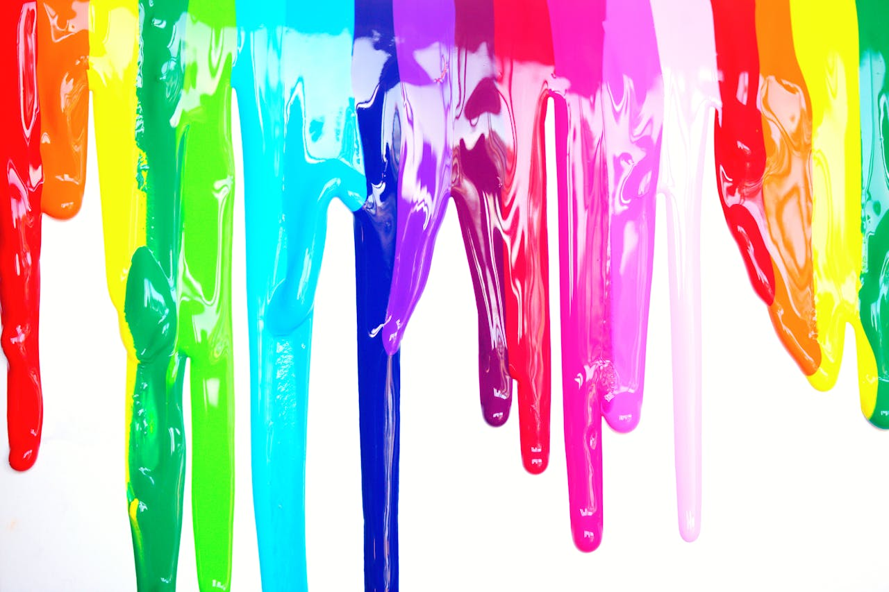

CSS Selectors Challenge
Each section applies advanced CSS selector rules:
p:first-of-type
,
li:nth-child(odd/even)
,
:has(img)
,
ul + p
, and external link attribute matching (
Traversy Media
).
Project 1
First paragraph highlighted with a soft warm tint via
p:first-of-type
, while external
links
receive a distinct accent color.
Second paragraph of Project 1 demonstrates
.section:nth-of-type(2)
bold emphasis.
- Item One
- Item Two
- Item Three
- Item Four
Project 2

Section automatically receives surface background and padding because it matches
.section:has(img)
.
Standard follow-up paragraph cleanly spaced inside the card container.
Project 3
Lists alternate stripe backgrounds via
li:nth-child(odd)
and
li:nth-child(even)
.
- Item One
- Item Two
- Item Three
- Item Four
This paragraph immediately follows a
<ul>
, matching
ul + p
for dark contrast styling.
Project 4
Demonstrates clean multi-selector composition without adding extra utility classes to markup.
- Item One
- Item Two
- Item Three
- Item Four